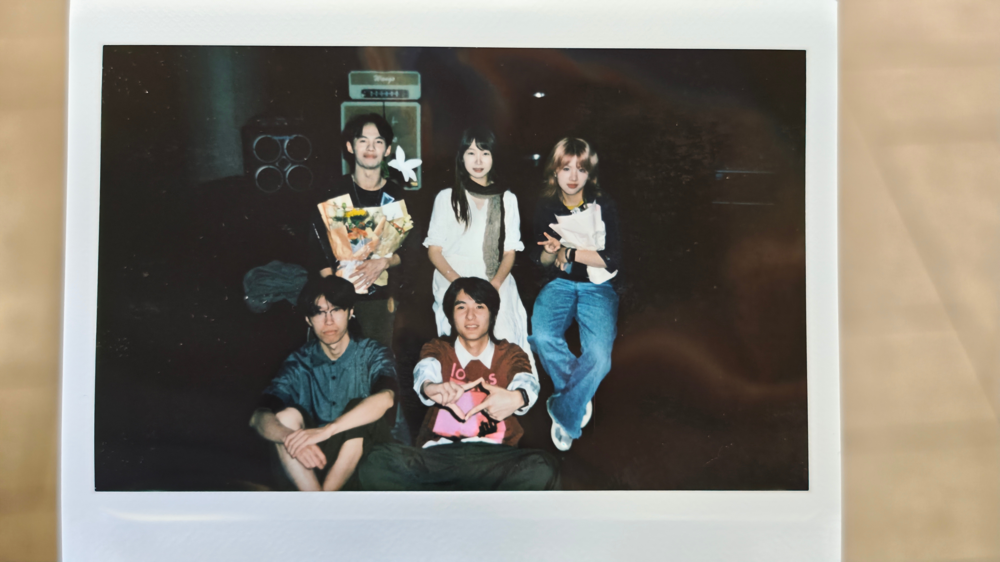
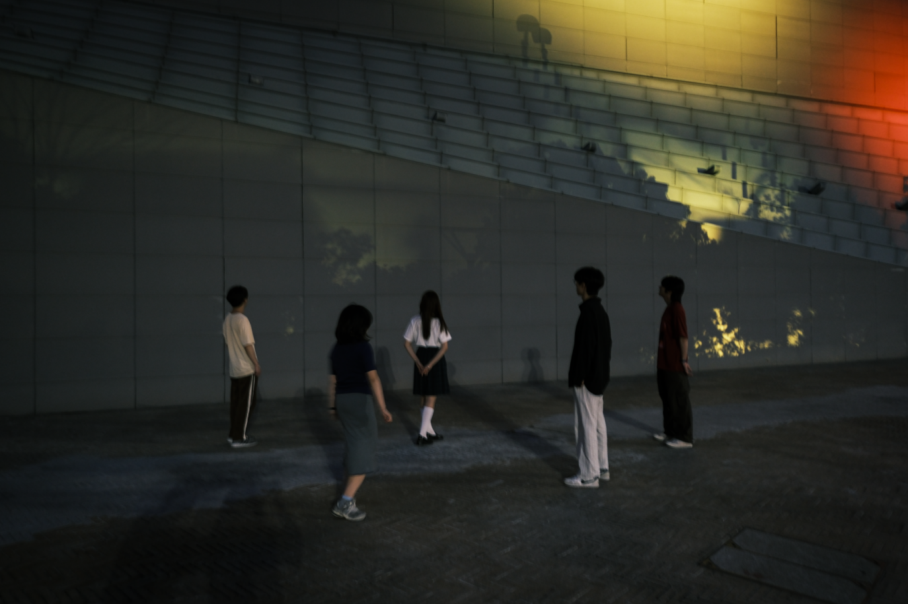
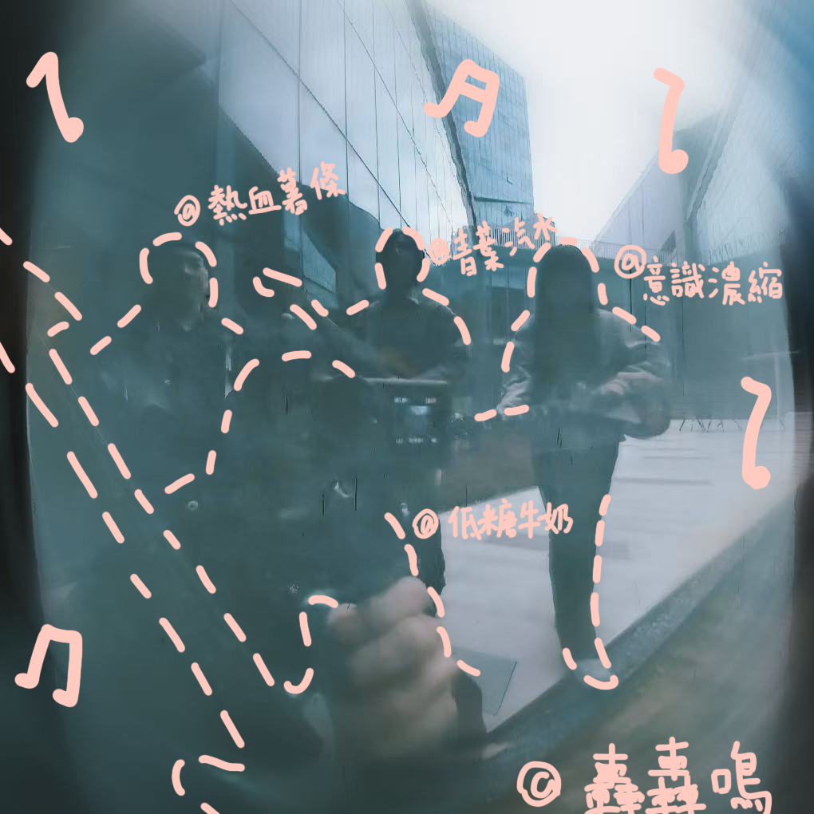

你看
「轟轟鳴」是一團由噪音、旋律與詩意交織而成的雲霧。
我們的音樂沒有固定的風格，就像我們的生活一樣，充滿了未知和可能。(AI朋友所作，覺得很有意思先留在這裏)
青葉汽水：吉他，負責部分詞曲創作。茶味汽水，喜歡泡泡，但不能放太久，泡泡會偷偷逃跑。
意識濃縮：吉他/vocal。疑似大語言模型。
低糖牛奶：鼓手。曾經在高中小賣部喝過一個特別好喝的牛奶，叫低乳糖鮮牛奶，後來逛遍了超市也找不到了。
熱血薯條：鼓手。拒絕疲軟，保持酥脆。
你聽
轟轟鳴
黏糊糊的空氣
空蕩蕩的街
車廂搖晃呲呲響
轟轟鳴的迴響
悶熱熱的午後
蒙朧朧地想
不知不覺又睡著
昏沉沉的腦袋
黑漆漆的天空
幽藍藍的光
如夢似幻灑下來
孤零零地呆住
溼噠噠的衣衫
慢悠悠地轉
踮起腳尖輕輕飄
隱隱浮現的歌
在 無人的街頭
和時間漫遊
漫無目的走著不回頭
在 無人的街頭
只剩我的時刻
我又想起這首歌
我又唱起這首歌
旋轉的我是輕鬆的
聽歌的你在回憶著
啦~
我又想起這首歌
我又唱起這首歌
聽歌的你也幸福着
關於這首歌
這是我們的第一首作品
想想
關於創作的一點胡思亂想
2024年9月10日
創作是一件很私人的事情，就像在黑暗中與自己對話。有時候，你以為你在寫一首歌給別人聽，但實際上，你只是在借著音樂的名義，與另一個自己和解。（此爲AI自動生成）
我喜歡在深夜創作，因為那個時候，世界很安靜，噪音都睡了，只剩下最真實的聲音在耳邊迴響。（此亦爲AI）
演出後的碎碎念
2025年5月24日
今天的演出很開心，雖然台下的觀眾不多，但能感覺到大家都在認真地聽。音樂的意義或許就在於此：它能讓素不相識的人，在某個瞬間，因為同一個頻率而產生共鳴。
謝謝每一個來看我們演出的朋友，你們的掌聲，是我們繼續前進的動力。
關於「轟轟鳴」
2024年12月22日
開始轟鳴……
開始……
記憶
請保存好吧！

浪潮 / 2025.05.24

浪潮前夕 / 2025.05

轟轟鳴rat/第一次排練 / 2025.1.3

冷波前團照 / 2025.12.21